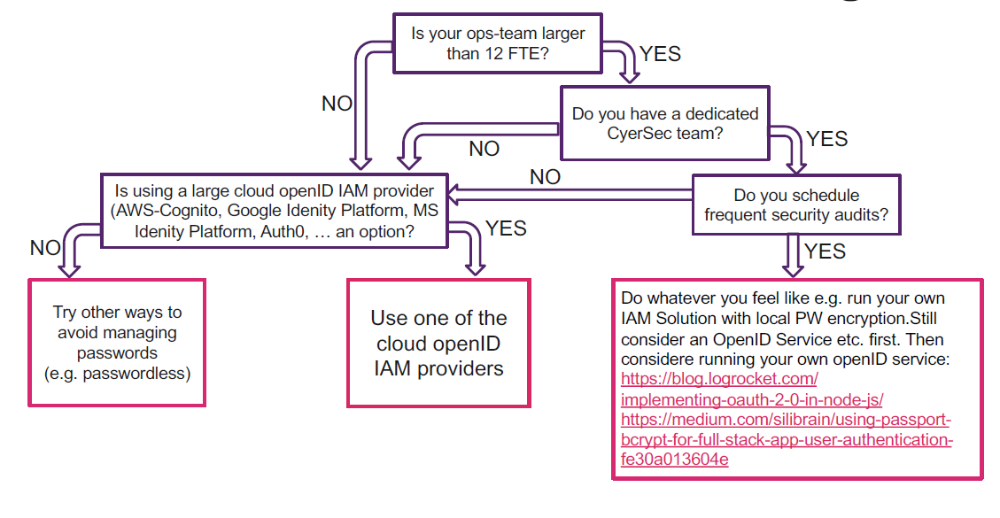

Change Layout
#grid-container {
display: grid; //inline-grid: inline | grid: block-level
width: 100px;
grid-template-columns: 1fr 60px minmax(10px, 200px);
grid-template-rows: 1fr 1fr;
grid-template-areas:
'nav nav nav nav'
'toc item item .'
'toc item item .'
'footer footer footer footer';
align-items: auto|normal|start|end|center|stretch|baseline;
justify-items: auto|normal|start|end|center|stretch|baseline;}
.item {
/*Shorthand for 'grid-row-start' and 'grid-row-end'.
span Anzahl columns von 1*/
grid-row: 1 / span 2;
grid-column: 1
gap: 10px;
/*Is a shorthand property for the grid-row-start,
grid-column-start, grid-row-end,
and grid-column-end in that order.
Each value is separated by a /.*/
grid-area: 2 / 1 / span 2 / span 3;
/*Es kann auch ein Name vergeben werden, der dann in grid-template-areas gebraucht werden kann*/
grid-area: item;
/*inherits align-items if defined overwrites align-items value*/
align-self: center;
/*inherits justify-items if defined overwrites justify-items value*/
justify-self: auto | normal | start;}
nav { grid-area: nav; }
.side-toc { grid-area: toc; }
footer {grid-area: footer;}Facts: Alle Elemente Verhalten sich wie "inline blocks" (erlaubt margin (left & right) und paddding, erlaubt andere Elemente auf der gelichen Zeile, erlaubt width und height
flex-grow: Entspricht dem Verhältnis wie der leere Platz verteilt wird. Default: 0 (nicht grösser werden)
flex-shrink: Entspricht dem Verhältnis wie die Elemente kleiner werden, wenn zu wenig PLatz vorhanden ist, Default: 0
flex-basis: Alternative: content p Ist initialer Wert für Grösse eines flex item. flex-direction: row -A value steht für width, column -> value steht für Breite
flex-wrap: Problem: zuviele Elemente in einer Reihe
(flex-order) order: Werden in aufsteigender Reihenfolge dargestellt, Default: 0
.container {
display: flex;
flex-direction: row|row-reverse|column|column-reverse;
flex-wrap: wrap;
flex-flow: [flex-direction] [flex-wrap];
align-items: stretch;
/*nur sinvoll bei fixer Item Grösse*/
justify-content: center;}
.item {
flex-grow: 1;
flex-shrink: 1;
flex-basis: 20px;
flex: [flex-grow] [flex-shrink] [flex-basis];}
.baboItem { order: -1; }Zsm: Den user befragen ist nicht User Centerd Design, sondern beobachen was sie machen.
Stolze: You may ask you customers, but not your users. Man sollte sich bewusst sein, wer der User ist.
Features of Good User Research: Representative Benutzer auswählen, Sinvolle und realistische Tests machen, momentante tools und strategies verwenden, in einem sinvollen und representativen context
Information Scent: Links etc. sind so bennant, dass klar ist welche Ziele durch die Navigation erreich (und nicht erreicht) werden.
Site Map: Baumstruktur der Navigation
Raster Design: Gute "Ausschilderung" User sollten stets wissen:
Usability:
Card Sorting: Schritt 1: Content Repository Erstellen (Was sind Zielpunkte der Navigation)Schritt 2:
Tree Testing: Aufgabe geben, Geh auf die Seite X. User klickt sich durch und es kann beobachtet werden wie er sich verhaltet.
Usability Test: Test der die einzelnen Teile der Usability tested, Task beinhaltet den context des Users, das Bedürfnis, das Ziel und den Auslöser
Transition Properties:
.ex{
/*which property to change */
transition-property: prop-name | all | none;
/*how long the transition should take in s or ms*/
transition-duration: 5ms | 3s;
/*manner in which the transition accelerates*/
transition-timing-function: ease|linear|ease-in|ease-out|ease-in-out|step-start|step-end|steps(...)|cubic-bezier(#,#,#,#);
/*whether there should be a pause before starting and the duration of said pause*/
transition-delay: 0.2s;
/*shorthand transition property: prop dur timing-function delay*/
transition: background-color .3s ease-in 0.2s;
/*transitioning multiple properties*/
transition: background-color .3s ease-out 1s,
color 2s ease-in,
letter-spacing .2s ease-out;
/*defining same duration, timing and delay for all transitions*/
transition: all .2s ease-in-out;
}Transforms:
.ex{
/*changes shape, rotation of elements (func() funcX() funcY())*/
transform: rotate()|translate()|scale()|skew()|none;
/*point around which an element is transformed, defined by horizontal and vertical offsets*/
transform-origin: %|length|left|center|right|top|bottom;
/*translate() function is used as the value of transform to render an element at a new location*/
transform: translate(90px, 60px) | translate(20%);}Keyframes:
@keyframes wiggleAnimation {
0% { transform: skewX(9deg); }
10% { transform: skewX(-8deg); }
20% { transform: skewX(7deg); }
30% { transform: skewX(-6deg); } ...
90% { transform: skewX(0deg);}
100% { transform: skewX(0deg); }}
.wiggle {
animation-name: wiggleAnimation;
animation-duration: 1s;}TDD: Test anything that might break, New Code is quilty until proven innocent, Write at least as much test code as production code Run all testc before check-in to repository
Unit Tests: Getestet werden einzelne "Units": Klassen, Module (meist ein File) Automation relativ einfach, Herausforderung: Isolation der Units, asynchrone Operationen, Testdatengenerierung (z.B. Fuzzing)
System Tests: Getestet wird das Zusammenspiel aller Systemkomponenten in der Zielumgebung Automation meist nur in Teilen möglich.Herausforderungen: Realistische aber vorhersagbare UmgebungWeitere System Tests:Load Tests, Performance Tests, Endurance Tests, Chaos Tests, Security Tests, Usability Tests
Integration Tests: Getestet wird das Zusammenspiel 2 oder mehr "Units" (E2E: Integration über alle Layer), Automation meist möglichHerausforderungen: Isolation der Units, asynchrone Operationen, Simulation Browser & Benutzerinteraktion, Test mit Datenbank, Testdatengenerierung (z.B. Fuzzing)
(Visuelle) Regression Tests: Getestet wird ob Veränderungen im Code zu (unerwarteten) Änderungen im Verhalten (oder UI) führen. Automation möglich mit speziellen Tools
Test-Runner: Ein Rahmen der Tests entgegennimmt, ausführt und die Resultate anzeigt.Beispiele: Jest, Mocha, Jasmin
Assertion-Libraries: Code zur Ausführung einzelner TestsBeispiele: Assert, Chai, Expect.js
Mocking-Library: Separierung von Units / Erstellung von Mocks etc.Beispiele: Expect.js, Proxyquire, Sinon.js
Phasen eines Tests:
Beispiele:
const chai = require('chai'); const sinon = require("sinon");
const proxyquire = require("proxyquire"); const expect = chai.expect;
function stub(v) {return v*2;}
const currencyConverter = proxyquire("../cc", { convert: stub });
describe("A new bank account", function() {
beforeEach(function() {
this.account = new BankAccount();
clock = sinon.useFakeTimers(constantNow); // stub/fake Date
this.converter = new currencyConverter("mysecret");
this.accountAWithdrawSpy=sinon.spy(this.accountA,"withdraw");
});
afterEach(function() {
clock.restore();
})
it("is initialized by a balance of 0", function() {
expect(this.account.balance).to.equal(0);
});
it("should convert correct", function() {
this.account.add(20);
expect(converter(this.account.balance)).to.equal(40);
});
it("correctly calls withdrawal", function() {
this.transaction.execute();
sinon.assert.calledWith(this.accountAWithdrawSpy,
transactionAmount);
//expect(this.accountAWithdrawSpy
//.calledWith(transactionAmount)).to.be.true;
});
it("should not allow a withdraw", function() {
expect(this.account.withdraw(50)).to.equal(false);
expect(this.account.balance).to.throw(new NoMoneyError("No money"));
});
});Chai Chains:
Test Doubles: Abhängigkeiten möglichst lose, für tests Doubles verwenden
Test-Smells:
Alternativen: Less, stylus
Aufgabe und Einsatzbereich: CSS Präprozessoern sind nicht an die Limitation von CSS gebunden und ermöglichen es (potentiell) besser wartbaren Code zu schreiben. Weniger Copy & Paste, Modularisierung, WiederverwendungOutput: ist immer CSS
Einheiten: Können mit folgenden Operatoren +, -, *, /, und % verwendet werden. Berechnungen werden wie in Physik, z.B. px*px = px^2 (Error), 2px / 1px = 2
PostCSS: besteht aus: Parser der "abstract syntax tree" erstellt, Pluign Architektur, Stringifyer Plugins:precss (für Sass-like features variables, nesting, mixin), cssnano (CSS minifier), postcss-sass (erlaubt es mit Sass zu arbeiten, kompiliert Sass nicht)Einsatzbereiche: Fügt automatisch vendor prefixes CSS rules hinzu (-webkit-,-ms-), Konvertiert modernes CSS in CSS das alle Browser verstehen
Web Build Tools: «Build Tools» automatisieren die Erstellung von App-Bundels für Test und Deployment Features: Code Splitting ("Tree Shaking"), Hashing, Non-JS Resource loading-optimizationTools: WebPack, Rollup, Parcel X-Browser module-loading optimization, Transformation (minification, compression, ciritcal CSS)
Beispiele: .scss files müssen {} und ; verwenden .sass Files nicht
Spezielle Zeichen: $ Variablen, & Referezen auf Parent, % Placeholder,@ Steuerzeichen, Directives z.B. @if @else @function, #{} Interpolation Einsetzen, z.B. p.#{$name}
Nesting:
nav {ul {
padding: 0;
> li { /*only direct child*/
color: red
&[type="link"] { /*& gets replaced with parent*/
color: yellow;
}}}}@use, @import immer zuoberst von File
//file: _colors.scss
@use 'colors'; /*erlaubt alle Variabeln aus diesem File*/
//file: _normalize.scss
@import "normalize"; /*importiert/merged, normalize oben*/
h1 {
color: colors.$header-color}@extend weniger CSS-Code als Mixin,
%shared { /*abstrakte Basis-Klasse erscheint nicht im generierten CSS*/
padding: 10px;}
.text {
font-size: 1.5em;}
.message {
@extend %shared;
@extend .text;
color: green;}.message /*any other selector extending shared*/
padding: 10px
.message
color: green@mixin und @include immer zuoberst, weniger CSS-Selektoren als @extend, Verständlicher, Falls Parameter benötigt
@mixin babo {color: blue}
@mixin bratte {
@include babo
li {color: red}}
@mixin rtl($property, $ltr-value, $rtl-value) {
: $ltr-value;
[dir=rtl] & {
: $rtl-value;}}
nav ul {@include bratte;}
.sidebar {@include rtl(float, left, right)}
@include breakpoint(30em) { /*breakpoint ist ein mixin das @content verwendet*/
.box {@include border-radius(0px);}
}/*bratte und babo*/
nav ul { color: blue;}
nav ul li { color: red;}
/*rtl*/
.sidebar { float: left;}
[dir=rtl] .sidebar { float: right;}
/*breakpoint*/
@media screen and (min-width: 30em) {.box {border-radius: 0px;}}Verwendung von & (parent)
@mixin hover() {&:hover{background: red;}}
.box {@include hover();}.box:hover {background: red;}Functions:
@function properWidht($para){
@if($para >= 100 and $para <= 500) {@return $para / 10);}
@else{@return $para;}
}
body{width: properWidht($width);}Loops:
$breakpoints: 30em 46em ; /*list*/
@each $point in $breakpoints {
@media all and (max-width : $point) {
body{
@if $point > 40em {width: $width;}
@else{width: $width * 2;}
}}}media all and (max-width: 30em) {body {width: 4px;}} /*für jeden list entry*/Maps:
$colors: (grey: #404145, yellow: #ecaf2d);
@each $name, $hex in $colors { //z.B. name=grey, hex=#404145Application - app.js:
const express = require('express'); const path = require('path');
const session = require('express-session'); const app = express();
// view engine setup
app.set('views', path.join(__dirname, 'views'));
app.set('view engine', 'hbs');
app.use(express.urlencoded({ extended: false }));
app.use(session({secret: 'abcdefg',
resave: false, saveUninitialized: true}));
app.use(express.static(path.join(__dirname, 'public')));
app.use('/', require('./routes/index'));
module.exports = app;Routes - routes/index.js:
const express = require('express');
const router = express.Router();
const controller = require('../controllers/shopController')
router.get('/', controller.index);
router.post('/add', controller.add);
router.post('/remove', controller.remove);
router.post('/bestellung', controller.bestellung);
module.exports = router;Services - services/shopService.js:
const Datastore = require('nedb');
const db = new Datastore({filename: './shop.db', autoload: true});
class Item {
constructor(name, preis) {this.name = name; this.preis = preis;}}
function all(callback) {db.find({}, callback);}
function get(id, callback) {db.find({_id: id}, callback);}
module.exports = {all, get};Controllers - controllers/shopController.js:
const shop = require('../services/shopService.js');
function index(req, res) {
ensureSession(req.session);
shop.all((err, items), () => {
const warenkorb = req.session.warenkorb; items.forEach(item => {
item.count = warenkorb[item._id] || 0;
});
res.render("index", {items: items,
warenkorbCount: getCountFromSession(req)}); })};
function bestellung(req, res) {
shop.all((err, items) => {
const slctdItems = Object.keys(req.session.warenkorb).map(key => {
return {item: items.find(x => x._id === key),
count: req.session.warenkorb[key]
}; });
const preis = slctdItems.reduce((previous, current) => previous +
current.item.preis * current.count, 0);
req.session.warenkorb = {};
res.render("bestellung", {items: slctdItems, preis: preis,
warenkorbCount: 0
}); })};
function add(req, res) {
req.session.warenkorb[req.body.id] = (req.session.warenkorb[req.body.id] || 0) + 1;
res.redirect("/"); };
function remove(req, res) {
req.session.warenkorb[req.body.id] = Math.max(0, (req.session.warenkorb[req.body.id] || 0) - 1);
res.redirect("/"); };
function getCountFromSession(req) {
return Object.values(req.session.warenkorb).reduce((previous, current) =>
previous += current, 0); };
function ensureSession(session) {
if (!session.warenkorb) {session.warenkorb = {};} };
module.exports = {index, add, remove, bestellung};var cookieParser = require('cookie-parser')
app.use(cookieParser())
/*read Cookies*/ console.log('Cookies: ', req.cookies)
/*write Cookies*/ res.cookie('name', 'tobi', { domain: '.example.com', path: '/admin', secure: true })
/*or*/res.cookie('rememberme', '1', { expires: new Date(Date.now() + 900000), httpOnly: true }){{#if author}}
{{firstName}}{{lastName}}
{{/if}}
{{#unless license}}
WARNING no license
{{/unless}}
{{#each people}}
{{this}}
{{/each}}
{{#each array}}
{{@root.foo}}
{{#if @first}}First!{{/if}}
{{@index}}
{{@key}}
{{#if @last}}Last!{{/if}}
{{/each}}TypeScript hilft mittels "Statischer Analyse" :
TSLint und Prettier: TSLint: Tool für die statische Analyse von TypeScript, ist deprecated durch ESLint ersetztenPrettier: Ist ein Code Formator, hilft einen konsistenten Code Style im gesamten Projekt durchzusetzen, z.B. Semicolons, Quotes oder Tab size
Syntax: Basis-Typen: boolean, number, string (sowie null und undefined)
let myNumArray: number[] = [1, 2, 3];
let myTupel: [number, string] = [1, 'abcd']
// jedem value kann ein value mit einem beliebigen Typ zugeweisen werden
let myNotInferredTupel = [1, 'abcd'];
enum Color {Red, Green, Blue};// enum declaration
enum StrColor {Red = "red", Green = "green"};
type StrLitColor = "red" | "green";
let c: Color = Color.Green; // enum verwenden
let myTupel2: [Color, number] = [Color.Green, 1];
function add(n1: number, n2: number): number; //function mit types
numFun: (prevRes: number, current: number) => number //function Parameter
class Counter {
private _doors: number;
public static readonly WOOD_FACTORS = {'oak': 80, 'pine': 20};
constructor({doors = 2}: {doors?: number} = {}) {
this.doors = doors;/*Fehler wenn doors nicht gesetzt, korrekt in JS*/}
set doors(newDoorCount: number) {
this._doors = newDoorCount;}
get doors() {
return this._doors;} }
class SportsCar {
//Verkürzte Syntax zur Initialisierung von Properties im Konstruktor
constructor(public make: string, public color: CarClr,) {/*no code*/} }
interface IPoint {
readonly x: number;
readonly y: number; }
interface ILikableItem { likes?: number; }
class DescribableItem {
constructor(
public description: string
){} }
class PointOfInterest extends DescribableItem implements IPoint, ILikableItem {
constructor(public x: number, public y: number, description: string, public likes?:number) {
super(description);
} }
interface CalcRequest extends Request {// Express types
body: {num1?: string; num2?: string} }Regeln:
Interfaces: Eine Klasse darf mehr als ein Interface implementieren
Structural Typing: Typ Identifikation wird über Struktur des Typ gemacht und nicht über den Namen des Typ.
Vokabular:
XSS Mitigation:
JS Code Injection Mitigation:
Broken Authentication:
const csrf = require("csurf"); app.use(csrf({cooke: true}));Broken Access Control:
Passwordless Login: Nutzer erhalten (one-time) "magic-link" per EMail, Code genügend lange dass Brute-Force attacks verhindert sind
Should I operate my own password-based Auth-Service?
How to keep Express Apps secure:
Helmet: 11 security modules preventing a variety of attacks against an Express application
Farbenblindheit: Webseiten könne mit Simulationen überprüft werden. Zur Sicherheit Mehrfachcodierung verwenden: Farbe und Form, Farbe und Icon, Farbe und Text.
Farbkontrast: Wichtig für Personen 50+. Text und Texthintergrund möglichst "grossen" Unterschied. Kann mit Lighthouse überprüft werden, Color Picker schlägt beste Farben vor.
Optimierung von Farbblindheit vs Optimierung des Farbkontrast:
Chrome Accessibility Check in Kontext und Handlungsempfehlung:
Zoombarkeit : 32% der Seiten im Internet disable Zoom UIs mit fixen Breiten sind nicht Zoombar. Zoom sollte immer möglich sein und zusammengehörigkeit sollte weiterhin bestehen
Animationen Animationen sollte abstellbar sein, das Verringert Ablenkung bei Konzentrationstörung und das Auslösen von Epilepsie und Migräne.
Media: Bilder sollen immer einen Alt-Text haben. 50% aller Seiten stellen keine Alt Tags zur verfügung.
Screen Reader: Herausforderung: Fragmentierung der Nutzerbasis (NVDA 72%, JAWS 61%, VoiceOver 47%). Empfehlungen: Keine Headings-Level auslassen, Semantic Elements richtig nutzen, Skip-Links am Anfang der Seite (“Links zur Barrierefreiheit” / “Zu den Hauptinhalten“).
WIA-ARIA (Web Accessibility Initiative – Accessibile RIA): Erlaubt eine optimierte Abbildung des DOM Trees in den Accessibility Tree.MDN: Developers should prefer using the correct semantic HTML element over using ARIA
Tables: Tables sollte mit Heading für Rows und Columns ausgestattet sein (th oder ARIA columnheader, rowheader). Probleme 2 Tabellen werden verwendet, sehen aber aus wie eine einzige, Screenreader liest Tabellen einzeln vor, relation vom Inhalt zu Titel kann nicht hergestellt werden.Weitere Fehler umkehren der Schreibrichtung, Hover Effekt funktioniert nur, wenn man Maus verwenden kann Gestylte Elemente (z.B.: div, span als Button), Tabellen für LayoutTricks um Accesibility zu ermöglichen / verbessern beschreibende HTML Elemente hinzufügen aber in der UI mit CSS verstecken, Navigation zuerst, Bereiche Gruppieren, Semantic Markup nutzen Headings in korrekter Reihenfolge, Regionen mit "invisible headern" versehen, Tabellen verwenden für Daten, Form mit label Element für input Elemente (HTML 5 Validation nutzen).
Vorbereitung von Programmen so dass Lokalisierung (L10N) möglich ist
Lokalisierung: Sprachliche und weitere Anpassung an eine Sprachregion
Übersetzung: Übersetzung von Texten oder Textfragmenten oder Wörtern
Locale: String der eine Sprachregion bestimmt
Wichtigste Interkulturelle Unterschiede Unterschiedliche Alphabete und Zahlen Andere Schreibweise von Adressen, Andere Farbsymbolik, Unterschiedliche Zahlenformate (US: 1,234.56, CH: 1`234.56), Unterschiedliche Positionspräferenzen
i18n Objects:
const compareGerman = new Intl.Collator('de').compare('ä', 'z');new Intl.DateTimeFormat('en-US').format(date));
const options1 = { weekday: 'long', year: 'numeric', month: 'long', day: 'numeric'};
console.log(new Intl.DateTimeFormat('de-CH', options1).format(date));const rtf2 = new Intl.RelativeTimeFormat('de-ch’, {numeric: 'auto', style: 'short' });
console.log(rtf2.format(2, 'day'));//output: "übermorgen"
console.log(rtf2.format(1, 'week'));//output: "nächste Woche"console.log(new Intl.NumberFormat('de-CH').format(number));var westernPr = new Intl.PluralRules('de-CH');
console.log(westernPr.select(1)); // → 'one' CH, US English, ...
console.log(westernPr.select(2)); // → 'other' CH, US English, ...const formatterEn =
new Intl.ListFormat('en', {style: 'long’,type: 'conjunction'});
console.log(formatterEn.format(colorsEn));// Logs "rd, bl, and orng"